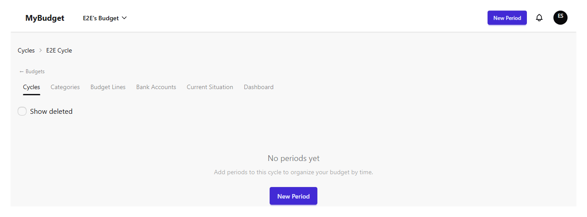
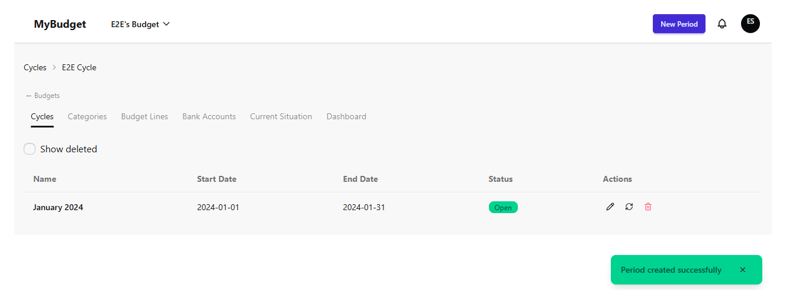
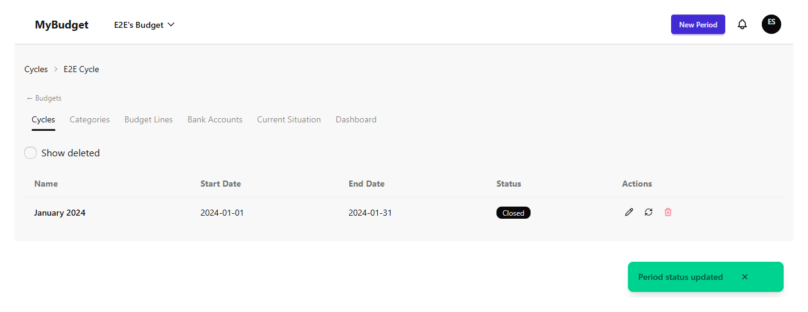
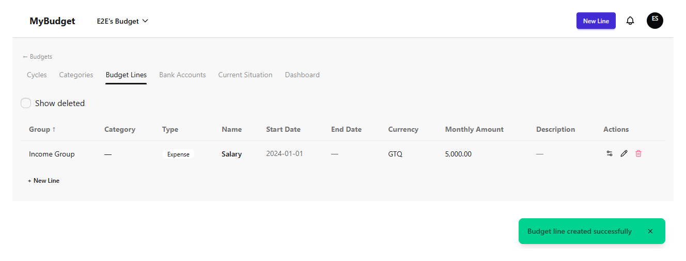
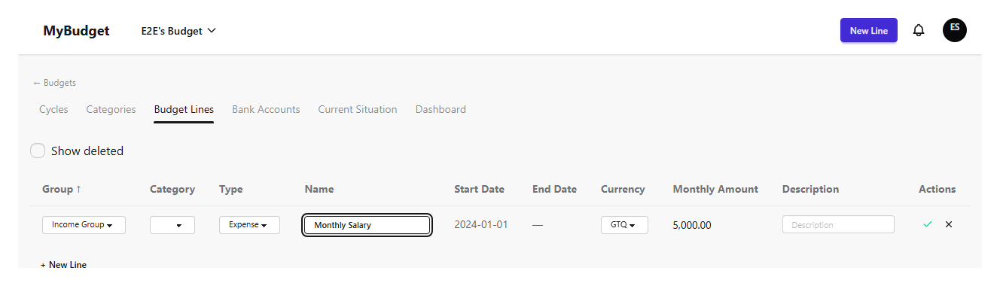
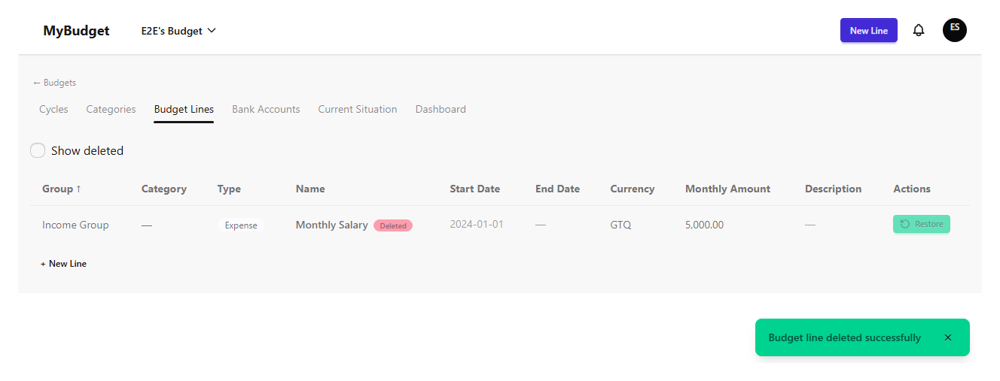

Periodos y líneas de presupuesto
Antes de poder registrar cualquier gasto, un presupuesto necesita dos cosas más además de ciclos y categorías: periodos para dividir un ciclo en tramos de tiempo manejables, y líneas de presupuesto para definir qué planeás gastar o ahorrar. Este capítulo cubre ambos — los periodos viven dentro de un ciclo, mientras que las líneas de presupuesto pertenecen al presupuesto en general y se pueden reutilizar entre ciclos.
Periodos dentro de un ciclo
Abrí un ciclo desde la lista de Ciclos para ver sus periodos. Sólo propietarios y administradores pueden crear o modificar periodos. Cada periodo necesita un nombre y un rango de fechas de inicio/fin que caiga dentro del rango de fechas del ciclo padre; MyBudget rechaza un periodo cuyas fechas quedan fuera del ciclo o se superponen con otro periodo del mismo ciclo.

Reutilizar un nombre de periodo que ya existe en el mismo ciclo se rechaza en vez de crear un duplicado — elegí un nombre distinto, o editá el periodo existente.

Estado, eliminación y restauración de un periodo
El estado de un periodo es Abierto, Cerrado, o Bloqueado — visible como una etiqueta y se cambia desde el ícono con forma de refresh en su fila. Cerrar un periodo es cómo indicás que la ejecución de esa ventana terminó; bloquearlo va un paso más allá. Renombrar el nombre o las fechas de un periodo se hace con doble clic directamente en la fila, el mismo patrón en línea que las líneas de presupuesto más abajo.

Eliminar un periodo es un borrado suave detrás de un diálogo de confirmación, igual que en el resto de las pantallas de estructura de MyBudget. Restaurar uno muestra primero una advertencia si también se eliminaron líneas de presupuesto en el camino, ya que restaurar puede traerlas de vuelta con él — vos elegís si restaurar con o sin las líneas en cascada.
Líneas de presupuesto
Una línea de presupuesto es un ítem planeado individual — un gasto, una meta de ahorro a largo plazo, o un objetivo de ahorro preventivo — asignado a una categoría y un grupo de categorías. Las líneas están asociadas al presupuesto, no al ciclo: tienen una fecha de inicio y una fecha de fin opcional (dejala vacía para una línea sin vencimiento), así que la misma línea puede seguir activa a través de varios ciclos. Crear o editar una línea requiere al menos el rol de operador.
Hay dos formas de agregar una: el botón "Nueva línea" abre un formulario completo, o podés usar la fila en línea "+ crear" al final de la tabla para una carga más rápida con los mismos campos. De cualquier forma, una línea necesita un nombre, un tipo, una categoría, una moneda (la moneda predeterminada o alternativa del ciclo), y un monto presupuestado. Reutilizar un nombre de línea que ya existe en el presupuesto se rechaza de la misma forma que los nombres de periodo duplicados.

Editar una línea de presupuesto
Hacer doble clic en el nombre de una línea cambia esa fila a modo de edición en línea — sin modal, igual que los periodos. Podés cambiar el nombre, el tipo, la categoría y la descripción de esta forma. La fecha de inicio, la fecha de fin, el monto inicial y la moneda quedan de sólo lectura una vez que la línea existe, porque esos son los valores que MyBudget usó para establecer la línea en primer lugar; cambiar el monto presupuestado hacia adelante usa un mecanismo separado (abajo) en vez de reescribir el historial.

Ajustar el monto presupuestado con el tiempo
El monto presupuestado de una línea puede cambiar con el tiempo sin perder su historial: los administradores pueden agregar una revisión con fecha, un monto nuevo, una fecha de fin opcional, y una nota explicando el cambio. Sólo los administradores pueden editar o eliminar una revisión, y MyBudget bloquea eliminar la primera revisión (original) de la línea, o cualquier revisión que ya tenga registros de ejecución en su contra — ambos casos dejarían el historial de la línea inconsistente.
Eliminar una línea de presupuesto
Eliminar una línea es un borrado suave detrás de un diálogo de confirmación; el interruptor "Mostrar eliminados" arriba de la tabla revela las líneas removidas con una etiqueta "Eliminado" y una acción de restaurar, así que nada se destruye nunca por accidente.
